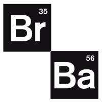

Badminton
Ik speel graag badminton in mijn vrije tijd, soms doe ik mee aan wedstrijden in mijn lokale club in Menen.
Mountainbiking
Mountainbiken doe ik zeer graag, ik ben graag buiten in de natuur op mijn fiets.
Calisthenics
Calisthenics is een vorm van fitness, deze is specifiek gericht op het trainen met alleen je lichaamsgewicht.
Likes
Muziek: Ik ben een grote fan van muziek luisteren,
hieronder als je klikt op de foto heb je een link naar mijn Spotify-profiel.
Series: Als ik wat wil relaxen dan kijk ik soms naar series,
de link neemt je naar de serie breaking bad, dit is een van mijn favoriete series van aller tijden.
